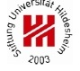
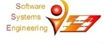
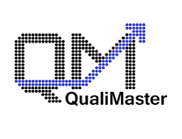

|  |  |  |
The QualiMaster Infrastructure Configuration tool supports the configuration of the an instance of the adaptive QualiMaster infrastructure, including the resource pool used to execute data analysis tasks, the data analysis algorithms, the data sources and sinks, the algorithm families (groups of algorithms with similar functionality but different quality trade-offs), and the data analysis pipelines defining the data flow from data sources through families to data sinks. QM-IConf is a domain-specific configuration frontend to the Software Product Line toolkit EASy-Producer.
This documentation includes the following guides:
Powered by
The research leading to these results has received funding from the European Union Seventh Framework Programme [FP7/2007-2013] under grant agreement nr. 619525.